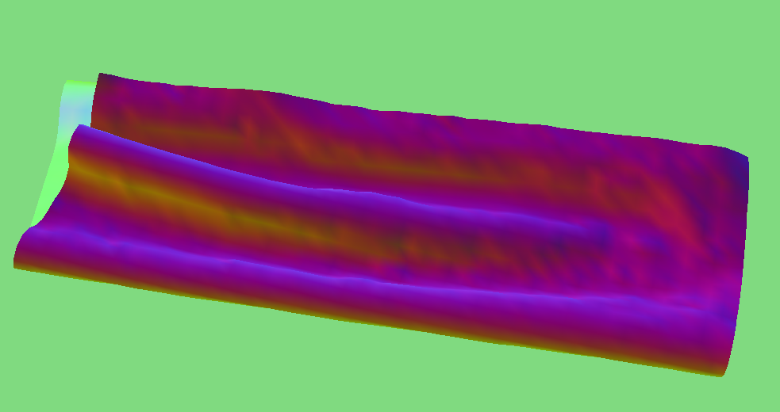
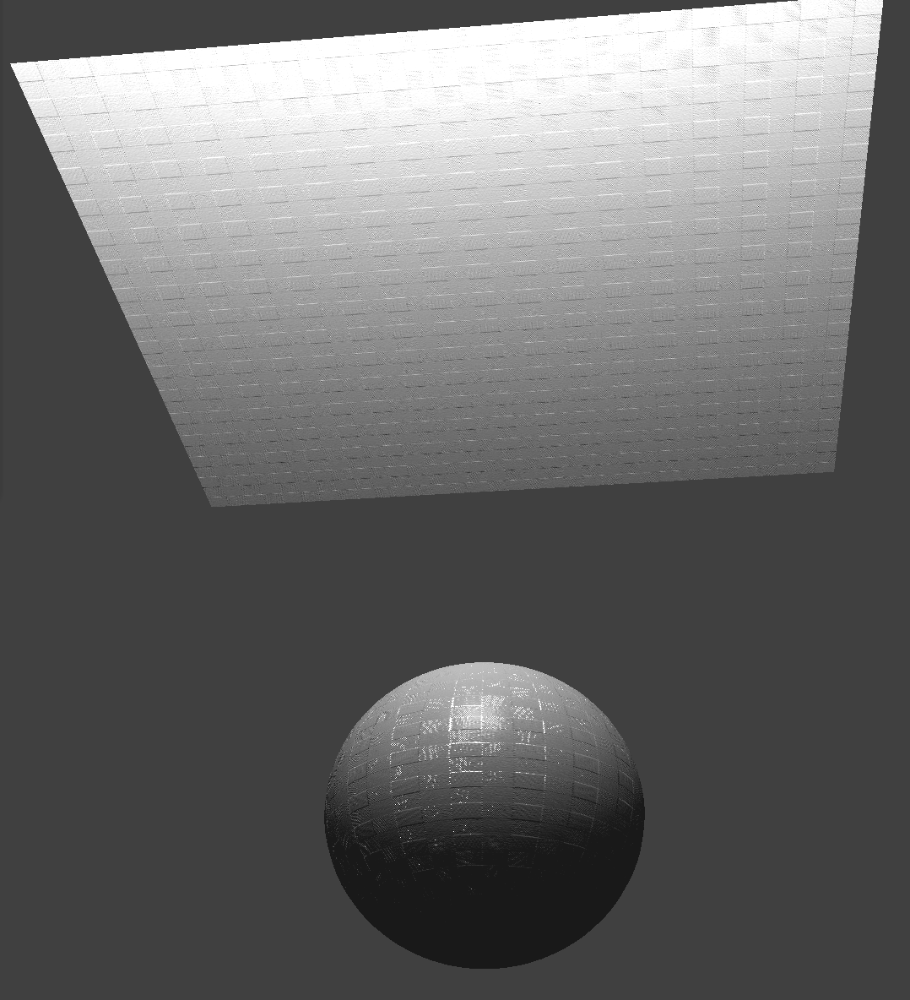

Part 1
in order: without shearing, only shearing, all constraints

Part 2
With a low ks the cloth falls more loosely and has more ripples while with a high ks it is much more taut with fewer ripples/wrinkles. With low density the cloth was very smooth while with high density it had many wrinkles and sagged more. With low damping the cloth swings back and forth with more force and falls more quickly before coming to a rest. With high damping the cloth falls very slowly and comes to a rest without swinging back and forth. Changing damping didn't affect the end result.
in order: default parameters, ks=100, ks=10000, density=1, density=100, damping=0.1 while falling, damping=0.8 while falling, pinned_4


 <
<
Part 3
The larger the ks value, the more rigid the cloth is and the less the cloth wraps around the sphere. We can see with ks=500, there are many wrinkles and the cloth wraps around the sphere relatively tightly whereas with ks=50000, the cloth has fewer wrinkles and sticks out more.
in order: ks=default, ks=500, ks=50000, plane


Part 4
default falling:
With low density the cloth is much smoother and spreads out more while with high density it wrinkles up more and stays relatively wrinkled. With low ks the cloth wrinkles up a lot and folds in on itself more while with high ks it smoothens out pretty quickly.
in order: density=1, density=100, ks=500, ks=50000

Part 5
A shader program shades an object to give it a different appearance, such as bumps or different materials. Vertex shaders work to get geometric properties like position and normal vectors. These geometric properties allow the fragment shaders to get the color at that point.
Blinn-Phong shading involves adding the ambient, diffuse, and specular components to get the overall reflection of an object.
in order: ambient, diffuse, specular, all combined, custom texture
Bump mapping perturbs the normal to make it look like there are bumps while displacement mapping perturbs the positions themselves. We can see this in the renderings because the displacement mapping sphere/cloth look wavy. We can also see that with higher resolution the spheres look somewhat smoother.
in order: bump, displacement, bump -o 16 -a 16, displacement -o 16 -a 16, bump -o 128 -a 128, displacement -o 128 -a 128

mirror
website link: https://cal-cs184-student.github.io/sp22-project-webpages-huangshawn1/